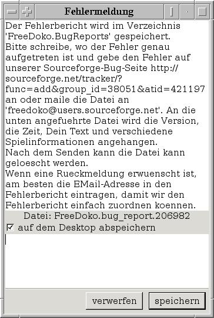

Fehlerbericht
Sinn und Zweck
Die Fehlerberichte helfen uns, von Ihnen entdeckte Fehler nachzuvollziehen.
Wir verstehen dabei unter einem Fehler, daß sich das Programm nicht entsprechend der Dokumentation bzw. der Erwartung verhält.
Beispiele wären:
- Den Menüpunkt letzter Stich gewählt, es erscheinen aber die Regeln.
-
Der Computer spielt nicht vernünftig.
Da bitte schreiben, was Sie als Spielverhalten erwarten und warum.
Es gibt zwei Möglichkeite, Fehlermeldungen zu erhalten:
- Sie wählen den Menüpunkt Fehlermeldung (s.u.),
- das Programm bemerkt selber einen Fehler und generiert die Fehlermeldung automatisch, bevor es sich beendet.
Fehlermeldungs-Fenster
Wenn Sie im Menü Fehlermeldung auswählen, erscheint folgendes Fenster:

Das Fenster ist wie folgt aufgeteilt:
-
Im oberen Bereich steht, was es mit der Fehlermeldung auf sich hat.
Wichtig ist da eigentlich nur, wohin Sie die Fehlermeldung schicken sollen, und zwar an freedoko@users.sourceforge.net senden oder direkt auf der SourceForge-Fehlerseite http://sourceforge.net/tracker/?func=add&group_id=38051&atid=421197 eintragen.
-
In der Mitte steht, in welche Datei die erzeugte Fehlermeldung geschrieben wird (FreeDoko.bug_report. gefolgt vom Startwert des Spiels).
Diese Datei finden Sie im Ausführungsverzeichnis, das ist normalerweise Ihr Heimatverzeichnis, unter Windows wird der Fehlerbericht auf dem Desktop abgespeichert.
-
Darunter kann noch die Einstellung, ob der Fehlerbericht auf dem Desktop abgespeichert werden soll, geändert werden.
-
Im unteren Feld können (sollten) Sie einen Kommentar hinzuschreiben, in dem Sie beschreiben, was für ein Fehler aufgetreten ist.
Wenn Sie eine Rückmeldung erhalten möchten geben Sie bitte auch ihre E-Mail-Adresse mit an, damit wir den Fehlerbericht leicht zuordnen können.
Automatische Erstellung
Bemerkt FreeDoko einen Fehler, z.B. daß am Ende vom Spiel die Teams nicht bekannt sind, dann erstellt das Programm automatisch einen Fehlerbericht und beendet sich.
Dabei wird Ihnen ein Hinweis ausgegeben (unter Windows in der DOS-Box), was falsch gelaufen ist und wie die Fehlerdatei heißt.
Wenn Sie noch eine Bemerkung einfügen wollen, können Sie die Fehlerdatei einfach mit einem Texteditor bearbeiten (s.u.).
Fehler-Datei
Die Fehler-Datei ist eine normale Textdatei, die Sie sich mit einem normalen Texteditor (z.B. notepad, vi) anschauen können.
Bitte verändern Sie nach dem Kommentar nichts, da wir den Fehlerbericht ansonsten nicht direkt nachspielen können.
Den Kommentar können Sie aber hinterher noch erweitern.
Der Inhalt ist wie folgt:
- Informationen über das Programm:
- Version
- Zeitpunkt der Programmerstellung
- Betriebssystem
- Uhrzeit
- genutzte Sprache
- Ihr Kommentar
- Das aktuelle Spiel:
- die Regeln
- die Spielerkonfigurationen
- Vorbehalte und Spieltyp
- die einzelnen Blätter
- der Spielablauf (gespielte Karten, Ansagen, Stiche)
- die aktuellen Blätter
- der aktuelle Stich
- das Spielverhalten vom menschlichen Spieler
- Eventuell das vorherige Spiel (im selben Format wie das aktuelle).
Version 0.6.7